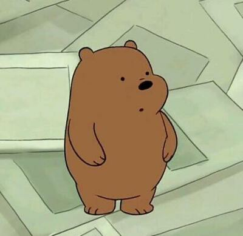
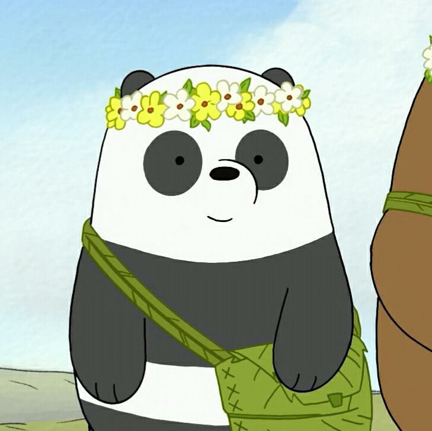
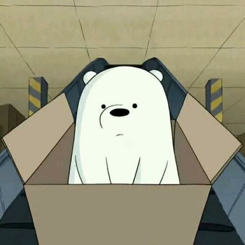
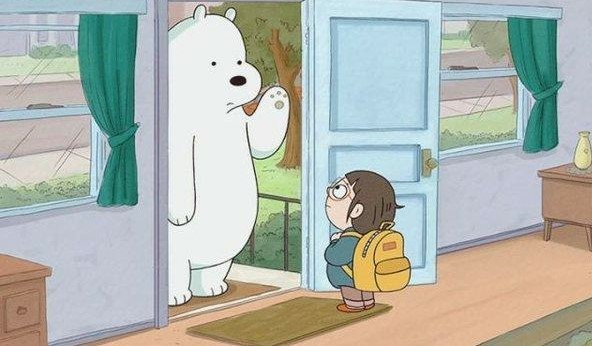

咱们裸熊
视频介绍(视频来源百度百科)
《咱们裸熊》是一部美国动画。是Cartoon Network于2015年7月推出的电视卡通，改编自Daniel Chong创作的网络漫画《The Three Bare Bears》，讲述一只叫Grizzly的热血灰熊、 一只叫Panda的宅家熊猫、一只叫Ice Bear的博学北极熊，三熊的日常生活故事。《咱们裸熊》第一部的发行于2015-07-27，原版名称为《We Bare Bears》，之后又连续推出了第二季、 第三季。《咱们裸熊》在一些视频平台上又被译为《熊熊三剑客》、《咱好熊弟》。
棕熊大大
棕熊，又叫大大。一个非常乐观热情善良的角色。 渴望和人交友，但因为自己的鲁莽有时就会搞砸。小 时候有被困在树上的经历，被消防员所救。还有演出 的经历，因为发现这不是自己真正的家，转而放弃出 走。左图为大大小时候的样子。
大大在三只熊中最大，有着属于自己的英雄情怀，有自制撬棍琼斯系列英雄电影，虽然各种糟点满满。
非常贪吃，房间比较脏乱，个人卫生上也不是很好。会有好多貌似靠谱其实并不靠谱的点子。和树袋熊网红
嚼嚼拉既是死对头也是搭档。注重自己权威的形象的设定，和鸽子交过朋友。容易被说动和冲动，但关键时
候非常有行动力。貌似非常受动物的欢迎，特别是狗。因为有棕熊，而增加了很多笑点。
熊猫胖达
熊猫，这里称胖达。小时在动物园被饲养，相当于被作为实验观察对象。因此有着胆小，敏感，甚至懦弱的性格， 也因此需要更多的保护。后来饲养员给了它一只玩偶熊猫，才有了稍微改观。偶然间通过电视得知了外面丰富多彩的世界 ，也迷上了动漫美少女。之后成功越狱。 左图为胖达小时候的样子。
胖达是三只熊中唯一有手机的熊，对电子科技产品了解比较透彻。喜欢在网上发布自己的生活动态。梦想交到女朋友，非常多愁善感。 有强烈的艺术细胞，画画，想象力都非常不错。也是三只熊中最可爱的一只，为素食主义者，对花粉，坚果什么的过敏，喜欢韩剧《我的野蛮女友》， 上肢力量比较弱。内心中有想变得和棕熊一样帅气的想法，非常喜爱美纪抱枕，因为长时间刷电子产品而眼睛近视。和查理关系比较好。
白熊阿极
北极熊，白熊，即为ice bear，三只熊中智商最高的一个，学习能力强，性格高冷。来自寒冷的北极，所以睡在冰箱里。 为技术宅，但也有失误的时候。白熊人妻属性爆棚，很会做饭，在家中负责打扫卫生等。喜欢看书，有着一个高大上的地下房间和吸尘器改造的代步工具。 左图为白熊小时候的样子。
白熊话不是很多，但很精辟，而且嗓音很好听，会说多国语言。近乎全能，算是隐性中的大佬，而且特别有自己的style。 在三只熊中最小，和人类尤里有段过去。从尤里那里学会了做饭，做家务，修机械等一系列技能。上肢力量最强，身手敏捷，会一点中国功夫和武术。 爱憎分明，对自己不喜欢的东西不会有好脸色，对自己在乎的东西一旦受到伤害会非常愤怒。轻微面瘫，表情不丰富，但一旦有表情了就很可爱。 和克洛伊关系比较好。
其他角色
在第一季，克洛伊就遇见了熊熊们，这也让克洛伊的生活变得美好，因为克洛伊只是一个10~12的小女孩，现如今却跳级到了大学🏤， 在学校里虽然被别人叫着“神童”，但克洛伊只想做一个快乐的普通女孩👧，而且由于年龄原因，克洛伊在学校的朋友也特别少。但她遇见了，熊熊们， 她也非常喜欢和熊熊们一起玩，从此，她的生活也变得美好。熊熊们也非常支持克洛伊。 （还有一个小细节，克洛伊见到熊熊们前叫它们“熊族”，而后来，就变成了“熊熊们”。）
查理
查理，一只大脚怪。手脚特别长，而且身干柔软灵活。害怕见到人类，不擅长和人类交流。 我觉得最大的原因可能就是人类不会把查理当作朋友，只会当作一个物种来看待。对任何可能拍照的事物展现恐惧，和熊熊们关系比较好。 性格中有自私的成分，毛手毛脚，做事可能不会考虑后果。但是他也是个善良，单纯的人。熊熊遇到困难时会帮忙。和小蛇交了朋友
守林员泰伯丝
泰伯丝，姑且翻译为如此，森林护林员。一个非常热血且强壮的女性，喜欢侦破一些所谓的不可能事件。 但是人真的非常好，始终对生活保持着一种乐观的态度，为了自己心中的正义而坚持不懈。 有一支游骑兵小分队，在小时候和查理有不解之缘。
考拉嚼嚼
考拉嚼嚼，一只树懒，网络红人，非常有钱。在人类面前表现的温顺可爱呆萌，其实背地里认为这些粉丝很烦。 动画剧集中也有因公共形象大减而漏气的时候，不过因为利用熊熊们而重新大火。内心会经常暴躁，非常自私， 总是一副目中无人的态度，对熊熊们感到讨厌，但有时因为情况又不得不利用，和棕熊的关系较为和缓，算是天生不对的搭档了。 没有真正的朋友，但一旦有人救了他，就会对那个人很好。